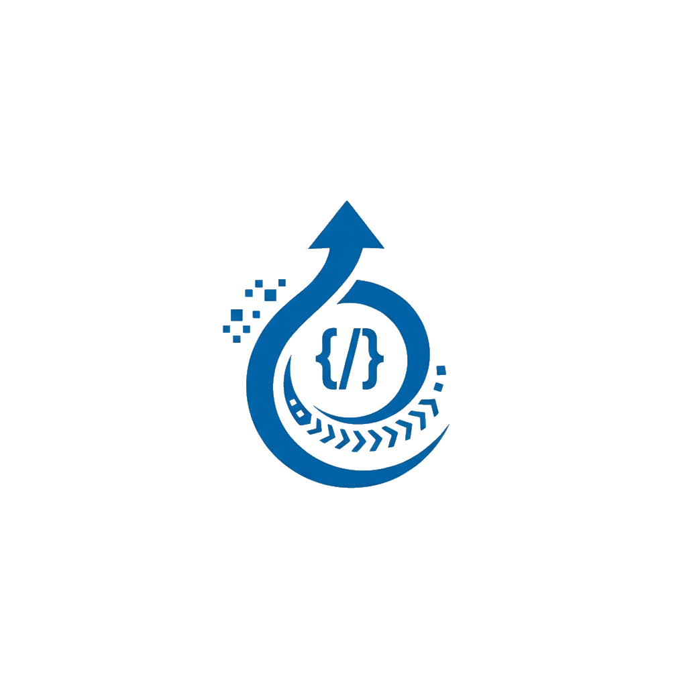

Projeto: Ingenia — Plataforma Digital de Ensino Introdutório de Programação Público-alvo: Estudantes do 8º e 9º ano do ensino fundamental Link de acesso à aplicação: https://ingenia.synaptha.com
Credenciais de demonstração
Perfil Senha Administrador admin@hub.devadmin123Professor teacher1@hub.devteacher123Aluno user@hub.devuser123
A Ingenia é uma plataforma web educacional que transforma o "começar a programar" em uma jornada clara e guiada. O aluno assiste a uma aula em vídeo, lê o conteúdo escrito, resolve exercícios em Python diretamente no navegador, recebe feedback imediato com correção automática e acompanha seu progresso módulo a módulo.
A trilha é organizada em módulos progressivos que cobrem os fundamentos da programação em Python:
if, elif, else e operadores de comparação.while e for para repetir tarefas e iterar sobre sequências.O conteúdo não é fixo no código: módulos, aulas e exercícios são gerenciados pelo administrador via painel.
A plataforma atende três perfis distintos:
Oferecer uma introdução prática, guiada e acessível à programação para estudantes sem experiência prévia é difícil: falta um ambiente único que combine teoria, prática e retorno imediato sobre o aprendizado.
Oferecer uma plataforma estruturada e intuitiva para o ensino introdutório de programação a alunos do 8º e 9º ano, com foco em aprendizagem ativa por meio de conteúdo guiado, prática e feedback imediato.
O desenvolvimento foi organizado em 6 fases incrementais (Fase 0 a Fase 5), rastreadas em um issue tracker com 18 issues-pai decompostas em 58 sub-issues (65 itens rastreáveis no total). As funcionalidades abaixo refletem o que foi efetivamente implementado, em coerência com os requisitos das entregas anteriores.
| Fase | Tema | Entregas principais | Status |
|---|---|---|---|
| Fase 0 | Fundação | Modelagem de dados de todos os domínios (accounts, curriculum, classes, submissions, progress), Django Admin e seed de dados | ✅ Concluída |
| Fase 1 | Autenticação & Autorização | JWT com role no payload, registro público, recuperação de senha, permissões por perfil, telas de login/registro/erro e guards de rota | ✅ Concluída |
| Fase 2 | Administração de Conteúdo | CRUD completo de módulos, aulas, vídeo-aulas, exercícios e casos de teste; CRUD de usuários; dashboard com métricas | ✅ Concluída |
| Fase 3 | Experiência do Aluno | Trilha, leitura de conteúdo, editor de código (Monaco), motor de correção Skulpt, submissão, feedback, progresso e histórico | ✅ Concluída |
| Fase 4 | Experiência do Professor | CRUD de turmas, matrícula de alunos, progresso coletivo e individual | ✅ Concluída |
| Fase 5 | Segurança, Polish & Validação | Refinamentos de UX, revisão de autorização e validação E2E das jornadas | ✅ Concluída |
Cobertura do MVP: as 15 funcionalidades Must-Have definidas no documento de escopo foram entregues. Itens explicitamente fora de escopo (gamificação avançada, chat em tempo real, integração com sistemas escolares, app mobile nativo, certificação, aulas ao vivo e suporte a múltiplas linguagens) não foram desenvolvidos, conforme planejado.
| # | Funcionalidade |
|---|---|
| 1 | Autenticação de usuários (login seguro por perfil) |
| 2 | Gestão de perfis e permissões (aluno / professor / administrador) |
| 3 | Trilhas de aprendizagem por módulos progressivos |
| 4 | Aulas com videoaula e material escrito |
| 5 | Exercícios práticos de programação |
| 6 | Editor de código no navegador |
| 7 | Correção automática com testes internos |
| 8 | Feedback automático ao aluno |
| 9 | Visualização de progresso do aluno |
| 10 | Interface simples e guiada |
| 11 | Painel do professor |
| 12 | Gestão de turmas |
| 13 | Painel administrativo de conteúdo |
| 14 | Gestão de usuários pelo administrador |
| 15 | Medidas básicas de segurança |
| Perfil | Persona | Capacidade principal | Restrições de acesso |
|---|---|---|---|
| Aluno | Estudante do 8º/9º ano, iniciante em programação | Navegar a trilha, consumir aulas, submeter exercícios e ver o próprio progresso | Vê apenas conteúdo publicado e somente os próprios dados |
| Professor | Professor do ensino fundamental | Criar/gerenciar turmas, matricular alunos e monitorar progresso coletivo e individual | Vê apenas as próprias turmas e alunos matriculados |
| Administrador | Administrador da plataforma | Gerenciar módulos, aulas, exercícios e usuários; visualizar métricas | Acesso completo a conteúdo e usuários, independente de vínculo com turma |
Após o login, o usuário é redirecionado automaticamente para a área correta conforme seu perfil (/student, /teacher ou /admin).
auth / app accounts)User + StudentProfile).student)teacher)admin)landing)As funcionalidades foram especificadas e validadas a partir de 8 jornadas críticas, que orientaram também os testes ponta a ponta (E2E).
| ID | Jornada | Perfil |
|---|---|---|
| J-001 | Fazer login e acessar a área correta conforme o perfil | Todos |
| J-002 | Aluno percorre a trilha de aprendizagem e acessa uma aula | Aluno |
| J-003 | Aluno consome o conteúdo e resolve exercício com correção automática | Aluno |
| J-004 | Aluno acompanha o próprio progresso na trilha | Aluno |
| J-005 | Professor cria/organiza uma turma e acompanha desempenho coletivo | Professor |
| J-006 | Professor consulta o progresso individual de um aluno | Professor |
| J-007 | Administrador cria e organiza um módulo com aula e exercício | Administrador |
| J-008 | Administrador gerencia usuários da plataforma | Administrador |
O comportamento do sistema é governado por 20 regras de negócio, aplicadas via constraints de banco, validações de serializer e lógica de domínio (UseCases).
| Código | Regra |
|---|---|
| BR-001 | Todo usuário deve possuir exatamente um papel principal (aluno, professor ou administrador). |
| BR-002 | Um perfil especializado existe apenas para o papel correspondente. |
| BR-003 | O e-mail do usuário deve ser único na plataforma. |
| BR-004 | Apenas professores podem ser responsáveis por turmas. |
| BR-005 | Um aluno não pode ter mais de uma matrícula ativa na mesma turma. |
| BR-006 | A trilha deve respeitar ordenação única de módulos por sequence_order. |
| BR-007 | A ordem das aulas deve ser única dentro de cada módulo. |
| BR-008 | Ao publicar, cada aula deve possuir material escrito e videoaula associada. |
| BR-009 | Todo exercício deve estar vinculado a uma aula. |
| BR-010 | Todo exercício deve possuir ao menos um caso de teste antes de ser publicado. |
| BR-011 | A submissão só pode ser feita por aluno autenticado, em exercício publicado. |
| BR-012 | Cada submissão gera exatamente um resultado consolidado de avaliação. |
| BR-013 | O feedback automático orienta o aluno sem expor a resposta completa. |
| BR-014 | O exercício é marcado como concluído apenas com submissão aprovada. |
| BR-015 | O módulo concluído depende da conclusão das aulas e exercícios vinculados. |
| BR-016 | Professores visualizam apenas dados de alunos de suas turmas. |
| BR-017 | Alunos visualizam apenas o próprio progresso, submissões e resultados. |
| BR-018 | Administradores gerenciam usuários e conteúdo independente de vínculo com turma. |
| BR-019 | Conteúdos não publicados não aparecem para alunos na trilha. |
| BR-020 | A quantidade de tentativas reflete o número de submissões do aluno no exercício. |
O Ingenia é um monorepo full-stack com backend e frontend desacoplados, comunicando-se via API REST.
┌────────────────────────────┐
│ Navegador │
│ React + Monaco + Skulpt │
│ (execução de Python │
│ client-side) │
└────────────────────────────┘
│ HTTP / JSON (REST)
▼
┌────────────────────────────┐
│ API REST │
│ Django + DRF │
└────────────────────────────┘
│ │
▼ ▼
┌──────────────┐ ┌──────────────────────┐
│ PostgreSQL │ │ Redis + Celery │
│ (dados) │ │ (jobs assíncronos) │
└──────────────┘ └──────────────────────┘
O fluxo de uma requisição segue camadas com responsabilidade única:
Request → View → UseCase (Service) → Selector / Model → Response
execute(), que lança exceções de domínio explícitas.Cada app Django representa um domínio de negócio: accounts, curriculum, submissions, progress, classes, ai (opcional) e core (utilitários).
O frontend espelha os apps do backend em domínios. Cada domínio (auth, student, teacher, admin, landing) é autocontido:
api.ts — contrato HTTP (espelha os endpoints do backend);types.ts — tipos TypeScript;model.ts — lógica pura e testável;hooks.ts — hooks TanStack Query para queries/mutations;pages/ — componentes de rota;ui/ — componentes específicos do domínio;e2e/ — testes Playwright por jornada.Estado de servidor é gerenciado por TanStack Query (cache + invalidação); estado de UI local por useState/useReducer. Um Design System próprio (shared/ui/) garante consistência visual via tokens CSS + tema Mantine.
| Camada | Tecnologia |
|---|---|
| Backend | Django 5 + Django REST Framework, Python 3.14, PostgreSQL, Redis, Celery |
| Frontend | Vite 6 + React 19 + TypeScript, Mantine v8, TanStack Query v5 |
| Autenticação | JWT (djangorestframework-simplejwt) com refresh |
| Editor de código | Monaco Editor |
| Execução de Python | Skulpt (interpretador Python no navegador) |
| Conteúdo | react-markdown |
| Infraestrutura | Docker Compose, uv (backend), pnpm (frontend), Traefik + Let's Encrypt (prod) |
| Testes | pytest + factory_boy (backend), Vitest + Playwright (frontend) |
Resumo das principais entidades por domínio.
accountsrole, account_status).curriculumtitle, sequence_order único, publication_status).written_content, ordem única por módulo).video_url, duration_seconds).statement, support_message).input_data, expected_output, is_hidden).classesname, class_status).submissionssource_code, evaluation_status, score_percentage).passed_tests_count, failed_tests_count, feedback_message).progressprogress_status, attempts_count, datas de início/conclusão).Correção automática no navegador (Skulpt). Em vez de um sandbox de execução no servidor — que traria risco de segurança e custo de infraestrutura —, o código Python do aluno é executado client-side com Skulpt, com limite de tempo de execução (Sk.execLimit + timeout de segurança). O backend recebe o resultado já avaliado e apenas o persiste. Isso eliminou a necessidade de um sandbox server-side (issues originais de sandbox foram canceladas) e tornou o feedback praticamente instantâneo.
Editor Monaco. Mesmo editor do VS Code, com syntax highlighting e tema escuro, oferecendo experiência profissional ao aluno iniciante.
Camada de UseCases/Services no backend. Toda regra de negócio fica isolada em casos de uso testáveis sem HTTP, o que facilitou a cobertura de testes das regras BR-XXX.
JWT com refresh automático. Interceptores Axios detectam expiração (401), renovam o token em segundo plano e refazem a requisição original, com fila para requisições concorrentes — sessão fluida sem novos logins.
Arquitetura por domínios espelhando o backend. Cada app Django tem um domínio frontend correspondente, mantendo um mapa mental único entre as duas pontas e facilitando a evolução.
Conteúdo gerenciável (não fixo no código). Toda a trilha (módulos, aulas, exercícios) é cadastrada pelo administrador, permitindo evoluir o material pedagógico sem alterar o código.
account_status) já no login.IsStudent, IsTeacher, IsAdmin, IsActiveAccount, IsOwner).RequireAuth, RequireGuest, StudentRoute, TeacherRoute, AdminRoute) — dupla camada de proteção (cliente + servidor).django-cors-headers.Hardening (Fase 5): rate limiting em login/submissões, auditoria de ações de admin e revisão final da matriz de autorização foram contemplados nesta fase, complementando as medidas de segurança do MVP.
O projeto adota testes em múltiplos níveis:
hub_test_db em tmpfs).Comandos unificados via Makefile: make test, make test-backend, make test-frontend, make test-e2e, make lint.
A aplicação está disponível em produção em https://ingenia.synaptha.com, hospedada em VPS com:
ingenia.synaptha.com e ingenia-api.synaptha.com).O seed inicial popula o banco com módulos, aulas, exercícios e os usuários de demonstração listados no início deste documento.